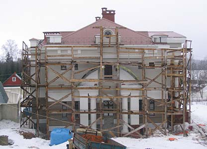
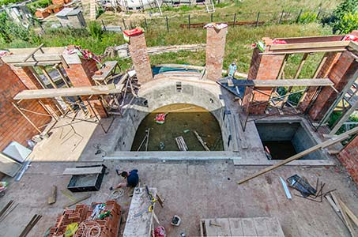
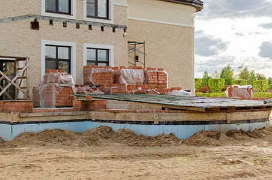
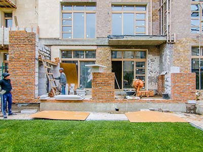

Строительство загородных домов под ключ
 
Одним из направлений нашей деятельности является строительство домов под ключ по северо-западному направлению Московской области: Дмитровское шоссе, Ленинградское шоссе, Пятницкое шоссе, Волоколамское и Новорижское шоссе
- Работаем на рынке Москвы и области с 1998 года
- Все работы выполняются на высочайшем качественном и технологическом уровне.
- Организуем полный комплекс снабжения объекта
- Выполняем все виды проектирования и расчётов
- Профессиональные консультации по вопросам дизайна дома, инженерно-техническим решениям и выбору отделочных материалов в процессе строительства.
- На все ремонтно-строительные работы предоставляется гарантия 3 года.
Качество при комплекстном подходе
 
Мы выполняем комплексное строительство домов и коттеджей под ключ.
Одним из ключевых преимуществ строительства дома в нашей компании является то, что мы готовы и хотим брать на себя весь цикл работ от строительства коробки до финальной уборки помещения после чистовой отделки. В отличии от компаний, которые занимаются только строительством коробок, мы заинтересованы в качестве строительства, так как все недостатки потом всплывают на дальнейших этапах, и очевидно, что нам их устранять за свой счёт. Поэтому наши требования к строительству существенно выше, чем в профильной строительной компании, которая не берется за ремонт.
Строительные компании, которые не хотят идти в ремонтный бизнес делают это по одной причине – им выгодно быстро клепать дома, забирать деньги и переходить к следующему объекту. То, что будет дальше их уже не касается. Ремонт – это уже более «трудные» и «долгие» деньги, не все хотят этим заниматься, если есть стабильный поток заказов на строительство.
Если вы думаете, что дом нельзя построить плохо, то я готов в приватной беседе привести вам массу примеров домов, построенных в самых дорогих посёлках московской области (в том числе силами девелоперов этих посёлков), где есть очень серьёзные вопросы по качеству, которые ведут к увеличению издержек и сроков на этапе ремонта.
Стоимость строительства дома
Стоимость строительства дома зависит от большого числа числа факторов.
- Средняя стоимость строительства коробки дома из пеноблоков без подвала простой формы составляет от 15000 - 180000 рублей м.кв. с материалом.
- Средняя стоимость строительства коробки дома из теплой керамики с цокольным этажом подвала сложной формы составляет от 20000 - 250000 рублей м.кв. с материалом.
Работы производятся по смете. Наш первоначальный расчет имеет допустимую погрешность не более 5%, что позволяет четко планировать бюджет.
Обсудим детали?
Зачем отдавать строительство и ремонт в одну компанию, если можно распределить этапы работ по организациям соответствующего профиля?
Раскрою секрет, который вам не расскажет ни одна профильная компания. Весь цикл работ можно разделить на три этапа:
- Строительство дома. Стоит дорого, объем вырабатывается быстро. Претензии по качеству от клиента – минимальные. Самая «сладкая» часть пирога.
- Черновые работы. Суммы меньше чем в строительстве, выполняется быстро, претензии минимальные (особенно если нет привлеченного технадзора).
- Чистовые работы. Это «сложные» и «долгие» деньги. Придирчивость заказчиков на этом этапе максимальная, при этом всплывают все недостатки, допущенные в ходе строительства и черновых работ. Сроки практически всегда затягиваются, потому что принять финальную работу психологически труднее, чем промежуточный этап – человек понимает, что после того, как сделает крайний платёж по договору, отношения перейдут в морально-нравственную плоскость, а поэтому обращает внимание на каждый минимальный недочёт. Это самый невыгодный этап работ, поэтому делать чистовые и черновые работы лучше с одним подрядчиком. Для исполнителя, брать отдельно чистовые работы после того как кем-то сделаны черновые – довольно неблагодарное и малоприбыльное занятие.
Отдельно можно выделить доделки чистовых работ за другой бригадой. Мало кто захочет этим заниматься, потому что в процессе устранения известных недостатков могут повылезать новые. Не говоря уже о том, что, по опыту, с заказчиком редко устанавливаются нормальные отношения, потому что весь негатив от неудачного ремонта ложится на того, кто занимается доделками. Нетрудно понять, что заниматься такой работай не хочет никто – она никогда не приносит прибыли (в лучшем случае в «ноль»), да и эмоционально никакого удовлетворения не приносит.
Мораль такова: если вы хотите построить дом для себя (не на продажу), то отдавайте все этапы работ в одни руки! Люди, которые берут на себя весь цикл работ, будут внимательно относиться к каждому этапу, потому что если где-то сделано «тяп-ляп», то разгребать это придется им же на последующих этапах.